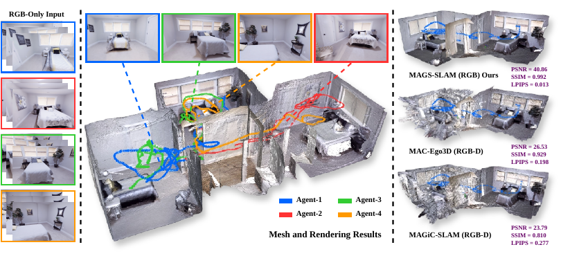

MAGS-SLAM: Monocular Multi-Agent Gaussian Splatting SLAM for Geometrically and Photometrically Consistent Reconstruction
The first RGB-only multi-agent 3D Gaussian Splatting SLAM for collaborative photorealistic scene reconstruction. We introduce compact submap communication, geometry- and appearance-aware loop verification, and occupancy-aware Gaussian fusion, together with ReplicaMultiAgent Plus - a benchmark for collaborative Gaussian SLAM.